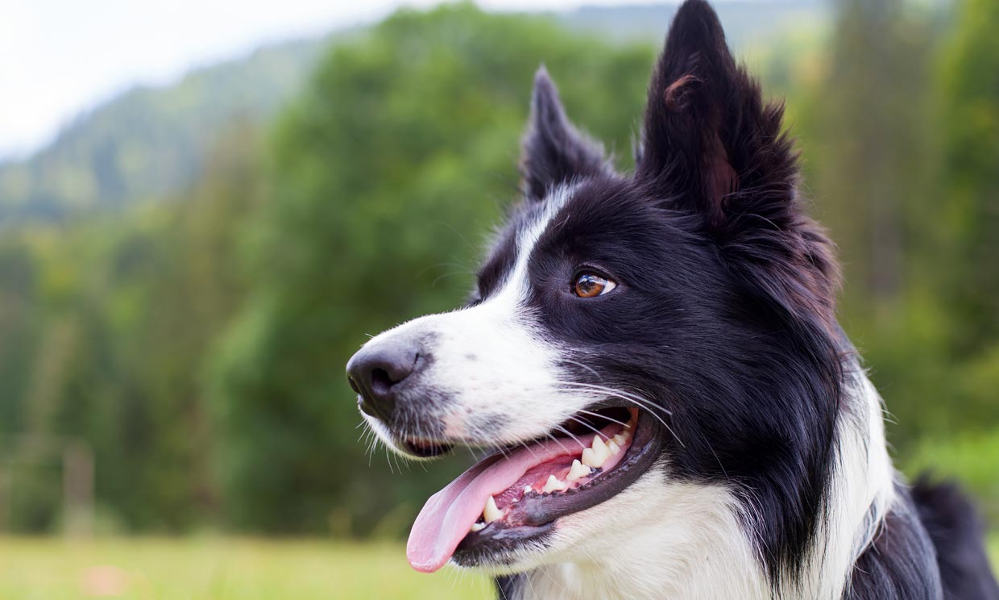
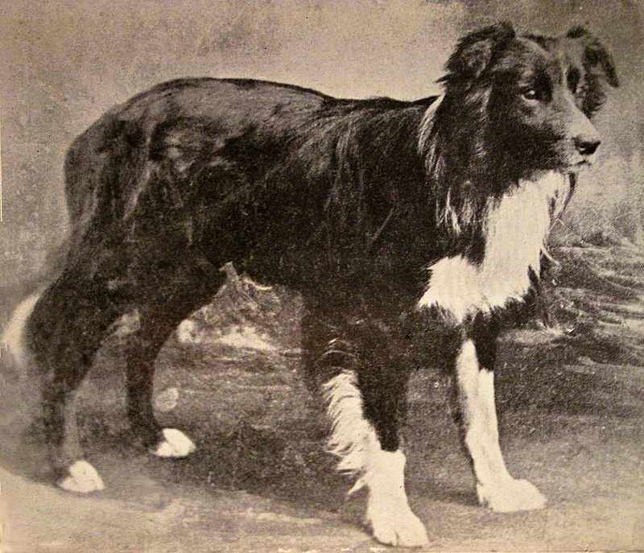

El Border Collie es el perro más inteligente que existe y el perro pastor por excelencia. Posee la capacidad de aprender extremadamente rápido y tiene un deseo
innato y ansioso de aprender y trabajar, lo que lo hace una raza única.
Son conocidos especialmente por su ‘ojo’, una mirada casi hipnótica para controlar las ovejas. Son el sello distintivo de la raza.
Es una raza creada para el trabajo. Es evidente por las cualidades que vemos en él. Tiene una agilidad única, una posee sigilosa y deslizamiento agazapada,
rápidos movimientos enfocados en la conducción del rebaño, la conducción corriendo en círculo para reunir el rebaño.
su inteligencia es mucho más que aprender algo muy rápido, se trata de que piensan por sí mismos.
Su instinto y genética por medio de una increíble selección lo capacita ejercer su trabajo de pastoreo por sí mismo.
Cerca del pastor puede recibir órdenes, juntar y llevar el rebaño excelentemente, pero en grandes superficies, colinas, zonas montañosas.
El Border Collie tiene la capacidad, y así se lo confía el Pastor, de manejar situaciones inusuales sin la ayuda del Pastor.
La raza del Border Collie, como lo conocemos hoy, tuvo su origen en Northumberland, un lugar en la frontera entre Inglaterra y Escocia;
de ahí su nombre Border (Frontera) Colie (Útil).


La raza fue producto de la necesidad de un perro que fuera robusto, ágil y adiestrable, con una destreza innata, para trabajar largar horas con el rebaño
por terrenos accidentados, montañosos y rocosos. Y durante un tiempo éstos perros como raza aun no estaban definidas claramente, eran simplemente ‘Collies’,
perros pastores. Fue en la década de 1860 cuando la popularidad de estos perros aumentó.
Las exposiciones también estaban poniéndose de moda, y los Collies rápidamente entraron en el mundo de las Exposiciones.
De los Collies de los pastores, habían cachorros Collies que iban al mundo de las Exposiciones y los pastores fueron se fueron dando cuenta
que no podían seguir criando perros con doble propósito (Show o Trabajo).
Fue criado tanto para trabajar en las montañas o colinas como para las pruebas de trabajo,
el Border Collie como Raza no llega a existir hasta 1906, cuando se formó la ISDS (International Sheep Dog Society).
El Border Collie no se hizo popular hasta finales del siglo XIX, cuando se hizo el primer concurso oficial de pastoreo en Bala (Gales)
cuando un extraordinario Border Collie llamado Old Hemp ganó la primera vez en 1984 y continuó ganando más competiciones prestigiosas,
dándole el prestigio y la popularidad que tiene hoy el Border Collie. Old Hemp es considerado el progenitor de la raza Border Collie.